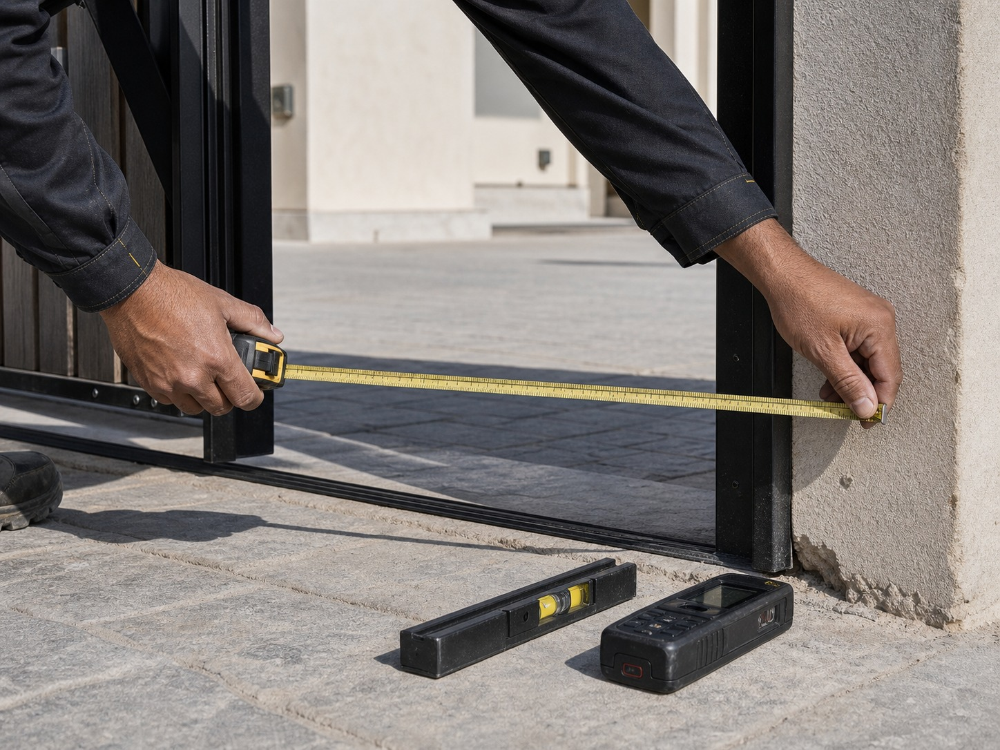
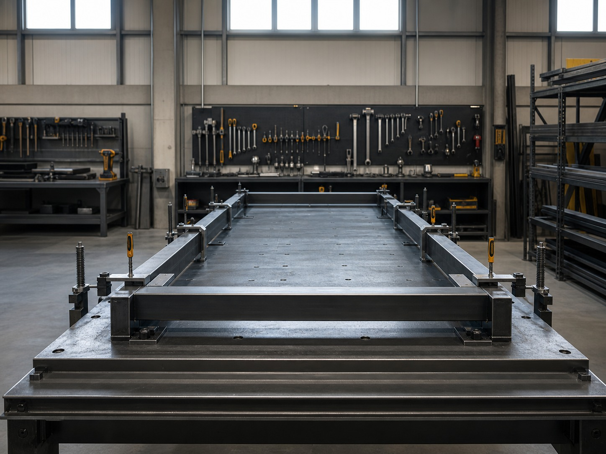
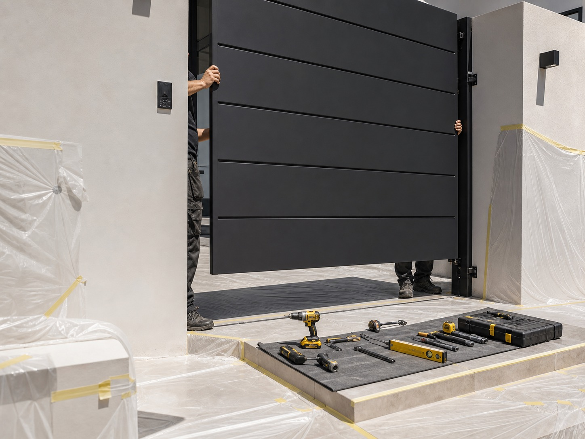

Process
No surprises between quote and handover
Most problems in this trade are process problems, not skill problems. Here is exactly how a Qobban project runs, and what you get at each stage.
Stage 01
Consultation
We start with use, not product. What the space has to do, who uses it, what's already there, and what's actually bothering you about it now.
You'll get an honest view of material options and the cost bands they sit in — including when the cheaper option is genuinely the right one.
You receive: a recommended approach and an indicative cost band.
Stage 02
Site Measurement
Nothing is fabricated from a phone measurement. We measure on site, check level and square, record fall across openings, and assess access for installation.
This is the stage that prevents the gate that doesn't close and the pergola that doesn't sit level. It is not optional, and it is not charged separately.
You receive: confirmed dimensions and any constraints we found.

Stage 02Stage 03
Written Scope
This is the part that separates us from a price on a WhatsApp message. Your scope names the material and grade, section sizes, the coating system and film thickness, hardware and automation makes, the warranty period, and the lead time.
You can compare it line by line against any other quote — and we'd encourage you to. If a competitor won't specify the same things, that difference is the point.
You receive: a priced, itemised scope and drawings where relevant.
Stage 04
Fabrication
Built in our workshop to the approved drawing. Welds dressed, edges finished, fit checked before anything goes to coating.
Coating happens after fabrication, not before — so cut edges and weld zones are covered, which is exactly where corrosion normally begins.
You receive: progress updates and photos at key points.

Stage 04
Stage 05Stage 05
Installation & Handover
Surfaces protected before work starts. Fixings into structure, alignment verified, full operation and automation cycle tested. Site swept and cleared before we leave.
At handover you get photographs, operating and maintenance guidance, and the warranty documentation matching the scope you signed.
You receive: handover photos, care guidance and warranty.
Afterwards
We don't disappear at handover
Coating damage, alignment drift and automation faults are easiest and cheapest to fix early. Send a photo any time — assessment costs nothing.
Start at stage one.
A conversation about use, material and feasibility — before anyone talks about price.
Book a Consultation →